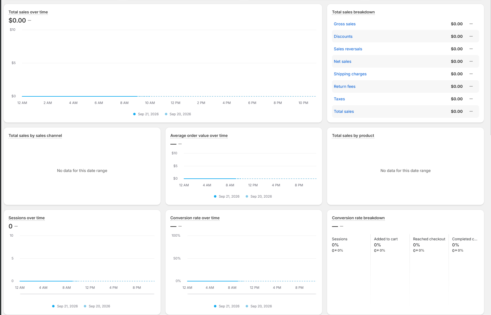
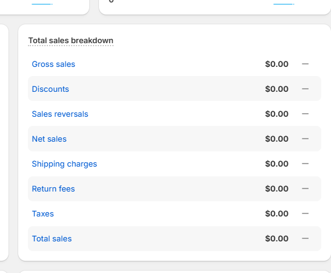

Design system · scratch file, not wired into the product
Block system
Every block here is built from one foundation — the tokens and primitives at the top of
this file's <style> — and that foundation was read off the five references you
picked in blocks-lab-picks.html. Those five stay untouched; this is what the formula
in them turns into when it is applied to everything else a back office needs.
The point is that a block is composed, not drawn. A metric card is
.card + .card-t + .val + .chip +
.basis. A breakdown is .rows.striped + .row. Change a token
and every block moves together — which is the whole reason to have a system rather than a folder
of pretty cards.
Nothing here is ported yet. Tweak it here first; it graduates by being rebuilt on
--po-* in styles.css and written into design.html.
A · Charts
Everything that plots a number over time or splits one total. Nine blocks, no chart library and no JavaScript — the frame is CSS, the series is a hand-written <path>, and every one of them holds together at 560px.

Reference · docs/refs/11-shopify-analytics-grid.png — The chart cards this family came from. Note the line going solid to now and dotted for the rest of the day, and the two empty cards keeping their height.
A1 · Line chart over time
Today against yesterday, solid to now and dotted for the rest of the day. The workhorse of every "over time" card.
Total sales over time
₱38,420+12.6% ↑vs ₱34,120 yesterday at 2 PM
₱60k₱40k₱20k₱0
7 AM9 AM11 AM1 PM3 PM5 PM7 PM
Sep 21, 2026 Sep 20, 2026
The rule
The series is cumulative, which is what makes the dotted tail honest. A per-hour line would have to drop to zero after 2 PM and read as a collapse. Cumulative means "no more sales yet" draws as a flat line — the shape of nothing has happened, not of something went wrong.
Dotted is the same hue and the same 2px weight as solid — measured off the reference at a 4/4 dash. Only the continuity changes, because the value is not less certain, it is simply not in yet. Greying it would read as a forecast.
There is no "now" marker and none is needed. The break from solid to dotted is the marker, and it costs no extra ink over the plot.
The frame is CSS, the series is SVG. Gridlines are one repeating background (three rules) plus the baseline border; y labels and x ticks are HTML absolutely positioned against the same percentages. That is the only reason the <svg> can be preserveAspectRatio="none" with a 0 0 100 100 viewBox — coordinates are literally percentages, and there is no text inside to stretch. vector-effect="non-scaling-stroke" holds the 2px.
Yesterday is drawn first. Where the two cross, today must be the line on top; painting order is the whole z-index story in SVG.
X ticks are space-between, so the first sits flush left and the last flush right rather than centred on their gridlines. Every one of the references does this. Seven ticks is the most that survives 560px — thirteen hours labelled would collide.
A2 · The same card, empty
No data for this date range. The card holds A1's height so a grid of these does not jump when one branch has a quiet day.
Total sales over time
No data for this date range
The rule
The value line is gone, not zeroed.₱0.00 under an empty plot claims a measurement that was never taken. The title alone, then the sentence, is the whole card.
The height is pinned by hand to A1's — 16 title + 16 head gap + 180 plot + 20 ticks + 31 legend = 263px of content, which is exactly what .a-empty-tall sets. If A1's plot height changes, this number changes with it. Nothing else in the system needs that coupling, which is why it is one literal and not a shared variable.
A collapsing empty card is the actual bug. Three of these in a row on a Sunday and the whole dashboard reflows to half its height — the owner reads that as the page being broken, not the day being slow.
Where there is an axis but no values yet (the range has started, nothing has sold), draw the flat line at zero instead and put an em dash where the value goes — see A9's third head. "No data for this date range" is for a range that produced nothing at all.
A3 · Area chart
One series with a soft fill under it. For a single trend with no comparison line, where the shape matters more than any one day.
The fill tops out at 22% opacity and fades to nothing at the baseline. Any heavier and the gridlines stop reading through it, which costs you the ability to judge a value — the fill is there to say "this is a quantity", not to be the chart.
An area chart is for one series only. Two filled areas overlap and the back one becomes unreadable; the moment there is a comparison period, it is A1 with two lines.
The range ends on the last complete day. Today is partial, and a partial day at the end of an area chart draws a cliff. Either end at yesterday, as here, or use A1's dotted treatment — never let a half-day be the last solid point.
13 points, ticks every 4th. Point count is chosen so space-between labels land on actual data points (0 / 25 / 50 / 75 / 100% = index 0, 3, 6, 9, 12). Pick 14 and every label is between two days and quietly lying.
The gradient is objectBoundingBox by default, so it stretches with the path's own box and needs no maths. The one thing to watch: gradient ids are global to the page — prefix them (aAreaFill) or two blocks silently share a fill.
A4 · Column chart
A categorical x — day of the week, branch, cashier. Where the gaps between the bars carry meaning that a line would smooth over.
Sales by day of week
₱230,350Sep 14 – Sep 20 · Sahara Mall
₱60k₱40k₱20k₱0
₱26,300
₱24,150
₱33,700
₱31,480
₱44,900
₱52,180
₱17,640
MonTueWedThuFriSatSun
The rule
Columns are CSS divs, not SVG rects — and it is the track that decides it. Rule 6 wants every bar to draw its remainder; in SVG that is a second rect per column and a rounded corner that shears the moment the viewBox is stretched. Two nested divs give you the track, a circular 4px radius at any width, and a hover state for free.
The track is the point. Saturday's bar only means "our best day" because you can see the 13% of the column it did not fill. Strip the track and seven blue rectangles tell you their order and nothing about their size.
One hue for all seven. Colouring the best day differently makes the chart argue a conclusion; the height already says which day won. Colour here is hover — the bar darkens to --link and its value appears on a dark pill, which is the ref 05 tooltip done with :hover and no JavaScript.
Categorical ticks are centred on their column, not space-between. The tick row copies the column row's flex:1 and 10px gap exactly, so the two stay locked at any width. This is the one place A1's tick rule does not apply — a category label belongs under its bar, a time label belongs on its gridline.
Seven columns is the ceiling at 560px: each gets ~52px, enough for a 4px radius to read and for Wed to sit under it without truncating. Twelve months needs the full-width stage or it becomes A5.
A5 · Horizontal ranked bars
Share of a total, ordered. Top products, top branches, top cashiers — anything where the names are long and the order is the answer.
Name and number share a line above the bar, they do not sit inside it. A label inside the fill disappears the moment the share is small — PVC Pipe 2" at 7% has 30px to live in. Above the bar, every row reads the same whether it is 32% or 2%.
Percentages are a separate right-hand column at a fixed 34px, muted, after the peso figure. Two tabular columns, both flush right: you can read the money down one edge and the share down the other without your eye tracking back.
Every bar is a share of the same total, so every track is the same length. Scaling each bar to the biggest value instead (Cement = 100%) makes the first row meaningless and the rest relative to something invisible. The track here is the total, and 32% looks like a third of it because it is.
The name truncates, it never wraps.Marine Plywood 1/2" · 4×8 is a realistic SKU name and a wrapped one breaks the row rhythm. Ellipsis plus the number never moving is worth more than the last three characters.
One hue throughout. Ranked bars are already ordered by length — a per-row colour adds a second ranking that says nothing.
A6 · Metric card with a sparkline
A number that has to carry a tile, with just enough shape under it to show which way it got there. For a KPI strip where a full chart card is too loud.
Sales today
₱38,420
+12.6% ↑vs ₱34,120 at 2 PM
Utang collected
₱6,150
—no collection yesterday
The rule
The sparkline bleeds to all three bottom edges.margin: 18px -20px 0 against the card's 20px padding, padding-bottom: 0, overflow: hidden so the radius clips it. An inset sparkline reads as a fourth content row competing with the number; a bled one reads as the card's floor.
It is deliberately unlabelled — no axis, no ticks, no end dot. The sparkline answers "which way", the value answers "how much" and the basis answers "compared to what". Adding a y-axis turns a tile into a bad chart card; if the values need reading, ship A1.
The spark is the same series as A1's solid segment. One fact, two grains: the card is what you put in a KPI strip, A1 is what you click through to. They must never disagree, so they should read the same query.
No comparison is an em dash in a flat chip, never a red −100%. The second card collected ₱6,150 on a day that has nothing to compare against — that is a good day with no baseline, and colouring it red would say the opposite.
A flat stretch still draws its line (the second spark sits on the floor until 11 AM). An empty box reads as broken; a flat line reads as quiet. Straight from ref 02.
A7 · Donut with a legend beside it
One total split three or four ways, where the split is a summary and the legend carries the real figures. Branch mix, category mix, tender mix.
Sales by branch
Sep 8 – Sep 20
Sahara Mall₱248,40048.5%
Poblacion₱167,20032.6%
Bypass Road₱96,80018.9%
The rule
The ring carries the shape, the legend carries the numbers. No labels on the arcs, no leader lines, no percentages painted on the ring — you cannot read an angle to 0.1% and pretending otherwise is the reason donuts get a bad name. The ring answers "roughly how do these compare"; the rows answer "exactly what are they".
The hole holds the total, which is our departure from ref 04. That reference leaves it empty, but then the biggest number on the card is a legend row and the card has no focal point. The total belongs there: it is the one thing the three slices are shares of.
One hue, three depths, darkest is the biggest share. Three separate hues would say these are unrelated categories; they are three parts of one number. Depth ordered by size means the ring reads dark-to-light clockwise and the legend reads top-to-bottom in the same order.
A full-circumference track sits under all three arcs. Here the slices sum to 100% so it never shows — until someone filters to two branches and the missing third has to be visible as a gap rather than silently rescaling.
Butt caps, not round. A round cap hangs half a stroke past each end; across three slices that is ~6° of invented ink and the arcs stop summing to the whole.
This svg has a fixed 128×128 and the default preserveAspectRatio — the opposite of A1. A circle cannot be stretched, so a radial chart never gets width:100%; it is a fixed block and the legend is what flexes.
A8 · Stacked share strip
One total split n ways in a single 14px bar. Payment mix is the case it was built for; it is also right for VAT vs non-VAT, or paid vs charged.
Payment mix
Sep 14 – Sep 20 · all terminals
₱267,340
Cash₱149,71056%
Card₱29,41011%
GCash₱72,18027%
Utang₱16,0406%
The rule
The legend prints the share, so the strip never has to. At 560px the 6% utang segment is ~26px wide — no label fits and none is attempted. Every number lives in the rows underneath, label left and figures right, which is the same right-hand column A5 and A7 use.
The legend reads down the columns, not across. Cash / Card in the left column, GCash / Utang in the right, so the four are in strip order when you read column-first — which is how a two-column grid actually scans. Ordering them across would put Card third in the strip and second on the page.
2px gaps between segments, 3px radius on each. One continuous bar makes four adjacent blues into a gradient you have to squint at; the gap does the separating so the hues can stay one family. The widths are percentages with flex-shrink left on, so the 6px of gap comes proportionally off the segments instead of overflowing the card.
Utang gets the palest blue, not amber. Colour here is the encoding for "part of one total", and one warm segment would read as a warning rather than a share. If unpaid credit needs flagging it earns a chip in its row — colour is a chip or a word, never a whole segment.
No track, because the segments are the total. This is the one share block that does not draw a remainder — there is nothing left over by construction. If they ever sum to less than 100%, the gap must be filled with --track and named, or the strip is lying about its denominator.
A9 · The chart-card head
The composition rule underneath A1, A3 and A4, on its own: dotted-underline title → value and delta → plot. Plus the three states the head has to survive.
Average basket size
₱1,284−4.1% ↓vs ₱1,339 last week
₱2k₱1.3k₱660₱0
MonWedFriSun
Gross sales
₱38,420+12.6% ↑
Orders
64—
Returns
——
The rule
Title, then value and delta on one baseline, then the plot. Always that order. The number is the answer and it sits above the chart, not inside it — a value overlaid on a plot moves when the data does, and a value under a plot is read last.
The dotted underline on the title is an affordance, not decoration. It is the standard "this term has a definition" mark, and in a POS it earns its keep: gross sales, net sales and average basket get argued about at month end. Measured at 1.5px, #CCC, 4px under the baseline — the .card-t primitive. Drop it and you lose the hover.
Three states, and only the middle one is subtle. Value + coloured chip is the normal case. Value + em-dash chip is a real measurement with nothing to compare it to — 64 orders on a store's first Monday. Em-dash value + em-dash chip is no measurement at all. Never 0, never a red −100%: both claim a comparison that was never made.
The delta chip sits beside the value, never under the title. It is an annotation on the number, so it shares the number's baseline and is roughly a third its size. On a narrow tile it drops to its own line under the value — a wrapped chip is fine, a chip that pushes the value out of the card is not.
The basis line is not optional and not a tooltip. "vs ₱1,339 last week" prints the thing being compared to, which is one muted line and removes the only question a delta ever raises.
The short plot is the same .a-plot at 96px — gridlines are a percentage-based repeating background, so the frame is identical at any height and nothing needs re-deriving.
B · Tables and breakdowns
Rows of facts, in the two shapes that actually occur: a fixed list of label/value pairs that sums to something (the breakdown), and an open-ended list of records you scan and sort (the table). The breakdown is striped and has no hover; the table is ruled and does. Both put the number on the right in tabular figures, so the right edge is one column.

Reference · docs/refs/12-two-column-breakdown.png — The block you pointed at. Striped even rows, the label a link, the amount bold, and a third narrow column holding an em dash where there is nothing to compare.
B1 · Two-column breakdown
A fixed set of lines that add up to one total — a day's sales, a VAT split, a cash count. The block the whole family is measured from.
Total sales breakdown
Sep 20, 2026 · Sahara Mall branch, all terminals
Gross sales₱184,320.00—
Discounts−₱6,415.00—
Sales reversals−₱1,280.00—
Net sales₱176,625.00—
Delivery charges₱2,400.00—
Return fees₱350.00—
VAT (12%)₱21,525.00—
Total sales₱200,900.00—
The rule
The stripe is the separator, and there is not a single rule in the card.#F7F7F7 on the even rows only — measured, and it is the same grey the foundation names --stripe. Eight hairlines would be eight pieces of furniture in a card whose entire job is eight numbers. Formula rule 7, applied at its most literal.
The pitch is 41px, not 34. Measured off the reference row by row (41, 41, 41, 42, 41…) — it is deliberately looser than --pitch, because a stripe needs vertical room to read as a band rather than as a highlight. The stripes are what buy the extra 7px back.
The third column exists even when it is empty. An em dash per row, 34px wide, centred 26px in from the edge. It is not a placeholder: it holds the comparison column open so that turning a comparison on (B2) moves nothing else. Formula rule 3 — never 0%, never a red −100%.
Every label is a link, and that is the card's only navigation. "Discounts" opens the discount report. That is why the labels are --link blue and the values near-black — the colour is telling you which half is clickable, not which half matters.
The last row really is bolder — measured, not assumed. The reference's "Total sales" value carries 23% more ink per pixel than the byte-identical value above it, so .row.total's weight bump is faithful and not an improvement. It is also the only hierarchy in the card: no rule above it, no tint, because the stripe pattern already lands the total on a grey band.
The dotted underline on the title is load-bearing — "Gross sales" vs "Net sales" is an argument in every hardware store. The title is a definition you can hover, and dropping the dots drops the affordance. The .card-sub line under it is our addition: the reference relies on a page-level date picker, and a card that can be screenshotted has to say what period it is.
B2 · Breakdown with a comparison
The same card with a period to compare against. The third column fills in; nothing else about the card changes.
The basis is in the subtitle, once, not in eight rows. "vs Sep 7–13, 2026" printed once at the top serves every delta beneath it. Formula rule 2 is satisfied by one line, and repeating it per row would be the same fact eight times.
Coloured text, not chips, in this column. Eight pills stacked down a 62px column turn a quiet card into a scoreboard — rule 4 says colour is a chip or a single word, and here the word is the number. The chip earns its place on a single hero figure (family A), not eight times in a row.
Discounts up 21.6% is red. The sign and the sentiment disagree on every cost line, and the colour follows the sentiment, not the arithmetic. A cashier reading this needs "worse" to be red whichever way the number moved.
Sales reversals keeps its em dash. Zero last week and zero this week is not a 0% change, it is nothing to compare — and .delta.flat on the Return fees row is the honest 0.0%, a real comparison that came out even. Those two rows sitting next to each other are the whole distinction.
Only the third column's width changes between B1 and B2 (34px → 62px). The label column is elastic, so the values stay in the identical place and the card does not reflow when you turn a comparison on.
B3 · Breakdown, empty day
A branch that did not open, or a date range before the terminal was installed. The state the current dashboard gets wrong.
Total sales breakdown
Sep 21, 2026 · Sahara Mall branch, all terminals
Gross sales——
Discounts——
Sales reversals——
Net sales——
Delivery charges——
Return fees——
VAT (12%)——
Total sales——
The rule
The rows stay, the numbers go. Eight em dashes, not a "No data" panel — the row labels are still the answer to "what would I see here", and keeping them means the card is the same height empty as full, so the grid around it never jumps. A full-card empty state (B10) is for a table whose rows are unknown; here the rows are fixed and only their values are missing.
₱0.00 is a lie and this is the fix. A store that did not open did not sell ₱0.00 of cement — nothing was measured. The dash says "no reading", the zero says "we counted and it was none", and only one of those is true on an empty day.
The dash is --ink-3 at normal weight, not the 600 the values carry. It has to sit visibly below the live values in B1, or a half-empty breakdown reads as eight equal facts.
The labels stay blue and stay clickable. The drill-down still works — it is the date range that is empty, not the report.
B4 · Data table
The workhorse. A list of records with a name and some numbers, sortable, scannable, as long as it needs to be.
Ruled and hovered, where the breakdown is striped and static. That is the split for the whole family: a fixed list you read (B1) gets stripes and no hover; an open list you scan and click gets hairlines and a hover tint. Stripes plus a hover tint fight — the tint has to be a different grey from the stripe to be visible, and then you have three greys doing one job.
No vertical rules, ever. Right-aligned tabular figures already draw the column edge; a rule between them is ink spent redrawing something the numbers do for free.
The SKU sits beside the name, not under it. Formula rule 8's boundary: a SKU is a qualifier on the name, so it belongs on the same line in --ink-3. Only a genuinely different fact — a timestamp, a branch — earns the second line (B6).
The name column is the only one that gives.max-width:0; width:100% forces the elastic column to be the text one, so at a 560px stage "Portland Cement 40kg" truncates and the four numbers never do. Every other cell is nowrap.
The header is the quietest row on the card — 11.5px, --ink-3, normal weight. It is a label for a column you have already understood by the second row.
B5 · Table with a sparkline column
When the per-row question is "and which way is it going" — movement per product, per branch, per supplier.
Movement by product
Units sold per day, the last 7 days
Product
7 days
Sold
Revenue
Portland Cement 40kg
412
₱113,300
Hollow Block 4"
2,840
₱51,120
Marine Plywood 1/2"
61
₱48,190
G.I. Sheet Ga.26
78
₱31,980
Hacksaw Blade 12"
—
—
The rule
The sparkline has no axis labels and it is not supposed to. It answers "which way", the columns beside it answer "how much". The moment you put a number on it you have built a chart in a 64px box.
It draws its own baseline. A 1px --track rule under every spark, at the same y in every row — that is formula rule 6 for a line: without a shared floor, seven squiggles at seven different heights are not comparable, and the row with no data reads as broken rather than quiet.
The empty row keeps its baseline and drops its line. Hacksaw Blade sold nothing all week: a flat rule plus two em dashes. A line drawn along the bottom would claim seven real readings of zero.
Three colours only — green, red, --ink-3 for flat. The grey is the important one: a product that did not move should not be coloured at all, or the column becomes a wall of green and red where nothing stands out.
The spark column is fixed at 74px and sits second, not last. Last would break rule 5 — the right edge must be one clean column of figures, and a picture in it is a notch.
B6 · Table with a leading thumb and two stacked lines
Rows that are events rather than quantities — sales, deliveries, stock movements. Anything with a "when".
The second line is a timestamp, which is why it is allowed. Formula rule 8 exactly: "when" is a different kind of fact from "which receipt", so the pair reads as one unit. Put the SKU there instead and you have two halves of one fact split across two lines — that is B4's .sku, beside the name.
The thumb sets the row height, not the text. 28px tile + 9px above and below = 46px, and the two lines are tucked inside it at 1.25 line-height. Take the thumb away and the row must go back to --pitch — a 46px row with one line of text in it looks like a rendering bug.
One tint for the whole column. Every tile is --blue-soft; only the glyph changes (card sale, delivery, order, completed). The tint belongs to the list, not to the row — colouring tiles by status turns a quiet log into a status board, which is B9 and a different component.
The glyph is furniture and is drawn like it — 1.8 stroke, currentColor, no fill. It tells you the kind of row at a glance and is never the thing you read first.
B7 · Table with a total row
Anything that has to foot: a delivery receipt, a purchase order, a stock count, a cash drawer.
Purchase order PO-1188
Fortune Builders Supply · received Sep 19, 2026
Item
Qty
Unit
Amount
Portland Cement 40kg
40
₱275.00
₱11,000.00
Hollow Block 4"
500
₱18.00
₱9,000.00
Roofing Nails 2½" (kg)
30
₱95.00
₱2,850.00
#14 Tie Wire (kg)
25
₱95.00
₱2,375.00
Total received
595
—
₱25,225.00
The rule
A rule above and a heavier weight. No band. The total is arithmetic, not a status — a tinted strip would be the only colour on the card and would out-shout the four figures it sums. Formula rule 4: colour is a chip or a word, never a row.
The rule above the total is one step darker than the body hairlines (--ink-3 against --line). That single step is what separates "another row" from "the line it all lands on" — the accounting convention, and it costs one border colour.
The unit column is dashed, not blank and not averaged. There is no such thing as the unit price of a mixed order; an average would be a number nobody asked for. Rule 3 covers "not applicable" as well as "not measured".
Qty totals, money totals, percentages do not. If a column cannot be summed, its total cell is a dash — that is the check to run on any footer before shipping it.
The footer does not take the hover tint. It is not a record you can open, so lighting up under the cursor would promise a drill-down that does not exist.
B8 · Compact top-N table
The "top five" slot beside a chart. Short, fixed length, read once and not sorted.
Top 5 products
Sep 14–20, 2026 · share of the five
#
Product
Revenue
Share
1
Portland Cement 40kg
₱113,300
42.3%
2
Hollow Block 4"
₱51,120
19.1%
3
Marine Plywood 1/2"
₱48,190
18.0%
4
G.I. Sheet Ga.26
₱31,980
12.0%
5
PVC Pipe 2" x 10ft
₱23,030
8.6%
The rule
The rank is grey and right-aligned in a 22px column. It is an index, not data — the order of the rows already says it, and the numeral is only there so you can say "the third one". Setting it in ink would give it the same weight as the revenue it is ranking.
No medals, no bars, no colour on the top row. Rank 1 is already first; highlighting it says something the position has said. If a bar is wanted, that is a ranked-bar block (family A's territory), not this one.
"Share of the five" is in the subtitle, and it is not the same as share of sales. 42.3% of the top five is not 42.3% of the store — printing the denominator is formula rule 2 doing its other job. The five shares sum to 100.0%, which is only true because the basis is stated.
Top-N never scrolls and never sorts. Fixed at five, and the drill-down is a "View all" link to B4. A sortable top-five is a contradiction — sort it differently and it is a different five.
B9 · Table with status pills
Rows whose state matters as much as their number — invoices, layaways, deliveries, voided receipts.
The pill is the only coloured thing in the row. Formula rule 4. Tinting the whole Unpaid row would make five rows of wallpaper out of five records, and the one fact you needed — which ones are unpaid — would be harder to find, not easier.
Four states, four tints, and they are the semantic ones: Paid green, Partial amber, Unpaid red, Voided grey. Voided is deliberately colourless — it is not a bad outcome, it is a row that no longer counts, and grey is the only honest way to say "ignore this line".
The status column is last and fixed at 74px, so the pills form their own left-aligned column. Pills right-aligned would ragged-edge, because "Partial" and "Paid" are different widths and a pill has no tabular figures to line up.
The amount stays black on the voided row. Greying it would be colouring a row by status through the back door, and the pill has already said it. One signal per fact.
The .chip primitive does all four — .up, .down, .flat, and one new tint class for amber. Status pills and delta chips are deliberately the same object at the same size, because they are the same idea: a small coloured word annotating a row.
B10 · Table, empty
A date range with no records in it. Every table above needs this state and the dashboard has one most mornings.
The header row stays. It is the answer to "what would be here", and it is also the thing that keeps the card recognisable as the same card it was yesterday. A table that swaps its whole body for an illustration has to be re-read from scratch when the data comes back.
The card keeps its height..empty holds 160px in the middle — a collapsing card makes every card beside it jump, which is the actual cost of an empty day on a dashboard grid.
One centred grey line, and it names the reason. "No sales in this date range" — the range is why, so the sentence says range. Not "Nothing here", not an icon, and not an error tone: an empty Tuesday is not a fault.
This is the table's empty state, not the breakdown's. When the rows are fixed and known (B3) you keep them and dash the values; when the rows themselves are the unknown, you replace the body. Choosing wrong is what makes an empty dashboard look broken.
C · Metrics and KPIs
One number, its label and the basis you are comparing it against — the same stack at four
densities, from a full card down to a cell in a strip. Every block here is the formula off picks 1, 2 and 3:
label, value at 2–3×, printed comparison, colour only in a chip or a single word.
C1 · Metric card with a delta chip
The default. Overview and Sales stat cards — one figure, how it moved, and a way out to the detail.
Three tiers, one per line: 13px label → 28px value → 12px context. Roughly 2.2:1 between label
and value is the entire hierarchy. Drop the value to the label's size and the card stops having a
subject — that is the one thing the Shopify tile in C2 gets wrong.
The chip, the basis and the link are one line, and the line never wraps.flex-wrap:nowrap plus white-space:nowrap on the row, and
margin-left:auto on the link. That gives a left cluster (the facts) and a right anchor
(the exit) with no centre. At a 253px card the three measure ~193px — the margin is real but thin,
which is why the basis is vs last Tue and not compared to last Tuesday.
Green up, red down — deliberately not the reference. Both chips are the same blue in the
banking shot; only the sign and arrow carry meaning. A cashier reading a red-to-black day needs the
colour to do the work, so we changed it knowingly. The arrow stays anyway, for anyone who cannot
see the hue.
The chip is smaller than the sentence beside it — 10.5px against 12px. It reads as an
annotation on the number, not as a peer of the basis. Only the first card carries a ···;
a control sits on the card it governs, and four of them in a row is furniture competing with numbers.
C2 · Compact analytics tile
A strip of six where six full cards would be too loud. Density comes out of the padding, never out of the number.
Gross sales
₱48,120
Orders
42
Avg basket
₱1,146
Items sold
318
Returns
₱860
Deliveries
—
The rule
Compact means less padding and a smaller radius, never a smaller ratio. 12/14px padding and
--r-sm instead of 20px and --r, but the value is still 22px against an
11.5px label — 1.9×. The Shopify reference sets label and value to the same 13px and the tile has no
focal point at all; six of them read as a paragraph of small print. That is the whole failure, and
it is one line of CSS away from working.
Three columns, pinned. Six tiles at a 560px stage give 166px each, 138px of content: a 22px
₱48,120 is ~92px, the spark is 32px, and the 6px gap makes 130. Any auto-fit would
re-orphan these at some in-between width, and the card that ends up alone on row three looks broken.
An empty tile still draws its axis. Deliveries is an em dash with a flat grey line at the
bottom of the spark box — an empty box reads as a bug, a flat line reads as a quiet day. Never
0 in a slot where nothing was measured.
The spark is a 6-point <path> with no axis, no labels and no tooltip. It is a
shape, not a chart — the question it answers is "roughly which way", and the number above it
answers everything else.
C3 · Big KPI with a trend sentence
One number that has to carry a page. The comparison is prose, and only the percentage is coloured.
Net revenue
₱503,450
↑ 5.0% in the last 7 days
Sales today
₱48,120
↑ 2.2% since yesterday
Weekly sales
₱287,400
↓ 4.2% vs the week before
Deliveries booked
—
no bookings in the last 7 days
The rule
Only the percentage is coloured; the rest of the sentence is the same ink as the label. Not a
muted grey tail — --ink at 12.5px, and not bold either. Colour is the only thing doing
any emphasising, which is what stops four cards in a row turning into a traffic light. That is what
.trend b.up exists for; the surrounding text inherits.
Label and trend are the same size and the same colour; the value is the only size step.
One step, taken twice, is the entire type system on this card. 13px → 28px → 13px.
We show the down state; the reference never does. All four of its cards are green, including
a 0.2%, so it tells us nothing about how red behaves here. Weekly sales is red on purpose — a set of
KPI cards that has never been tested on a bad day is not a tested set.
The ··· fades in on hover. The reference keeps four of them visible at a solid
grey, which puts furniture at the same contrast as the numbers. opacity:0 plus
:focus-visible so it is still reachable from the keyboard. The label reserves 24px of
right padding so a long one never runs under the button.
C4 · Stat with a raised unit
₱ before, kg / pcs / m² after — both sitting level with the top of the digits, so the digits stay the only thing on the baseline.
Sales today
₱48,120
↑ 8.4%This week
Portland Cement on hand
1,420bags
↓ 6.1%This week
#14 Tie Wire on hand
860kg
↑ 2.4%This week
Yard space free
1,280m²
0.0%This week
The rule
The mark is raised to the cap line, not superscripted and not baselined. At
.val's 28px the cap top sits ~19.9px above the baseline; a 12px mark has a ~8.5px cap,
so its own baseline lifts exactly 11px. Hard px, because vertical-align:super is
browser-defined and lands a pixel or two differently in each. Change .val's size and
this number has to move with it — that is the one thing that breaks the block.
The unit is 12px and --ink-2: smaller and quieter than the digits. The digits
are the measurement; kg is a footnote on them. Give the unit the same weight and the
eye reads "1,420 bags" as one long word instead of a number.
Raising the unit keeps the baseline clean. Four of these side by side and only digits sit on
the baseline, so the row of numbers stays a row of numbers — which is the whole reason the estate
dashboard does it and a plain inline bags would not.
Delta and basis are two lines here, not one: at 28px with a raised mark the card is already tall,
and ↑ 8.4% over This week is a smaller silhouette than one long line.
Use .delta (coloured text) rather than .chip when the card has no other
furniture — a pill needs something to sit against.
C5 · Split stat strip
Steps of one thing in one card, separated by hairlines — not four cards. The counter funnel: walk-in to paid.
Counter funnel
Sat 20 Sep · Sahara Mall branch
Walk-ins
214
counted at the door
Quoted
96
45% of walk-ins
Ordered
58
27% of walk-ins
Paid
42
20% of walk-ins
The same strip before the store opens
Counter funnel
Sun 21 Sep · Sahara Mall branch
Walk-ins
—
counted at the door
Quoted
—
of walk-ins
Ordered
—
of walk-ins
Paid
—
of walk-ins
The rule
One card, because these are four readings of one thing. Four separate cards would say the
numbers are independent, and the reader would stop looking for the drop between them. The test:
if the stats share a denominator or a sequence, they share a card — .split. If they are
different subjects, they get .g3 and their own shadows (see C9).
A hairline, not a gap..split puts border-left on every cell but
the first and kills the first cell's left padding, so the strip starts flush with the card's own
content box. A gap between cells would read as four cards again — the rule is what says "same card,
next column".
Every step is a share of step one, not of the step before it. 45 / 27 / 20% of walk-ins.
Step-to-step rates look better and hide where the loss actually is; a common denominator is the only
way the four numbers are comparable down the row.
Four columns, pinned, and only the sub-line may wrap. At a 560px stage each cell is 120px
with 88–104px of content. Label and value are nowrap because a folded "Walk-ins" breaks
the row rhythm; the sub-line is allowed to fold because grid rows equalise anyway. Empty state keeps
all four cells and all four labels — the card must not change height on a quiet morning.
C6 · Empty state of a metric card
Before the first sale of the day. This is the one the dashboard gets wrong today.
Not-yet is not zero. At 7am the store has not fallen 100% — it has not opened. A red
−100.0% on a quiet morning trains the owner to ignore red, which costs us the one day
it is real. The em dash says "nothing to compare", which is the truth.
The basis stays printed even when the value is a dash.vs last Sun is still the
right answer to "against what?", and keeping it means the card does not change shape when the first
sale lands — same three tiers, same height, no grid jump at 7:04am.
The chip becomes .chip.flat with a dash, it does not disappear. A missing chip
leaves a hole where the eye expects one and makes the card look half-loaded. Grey, dash, same size,
same slot.
A real ₱0.00 after closing is a different state and should print ₱0.00. The distinction is
"no rows yet" versus "rows summing to zero" — one is missing data, the other is a fact. If the
backend cannot tell them apart, the dash is still the safer default.
C7 · Metric against a goal
A value with a bar under it drawing its own track toward a target. The track is the target.
Sales today
₱38,400
64% of ₱60,000₱21,600 to go
Portland Cement sold
112 bags
112% of 100 bags12 over target
The rule
The track is the target, so the bar cannot lie..bar paints
--track the full width and the fill is a percentage of it — a fill with no remainder is
a coloured rectangle of unknown meaning. This is the cheapest version of rule 6: no tick, no axis,
the empty part does the work.
Over target clamps the fill at 100% and says the overage in words. A bar drawn past its own
track has no scale left, so the 112% goes in the line underneath. Colour changes to
--green at the moment the target is met — that is the only colour on the card, and it
is a fill, not a row.
The line under the bar is label-left, number-right — progress on the left, remaining on the
right, both nowrap at 11.5px. At a 253px card the pair measures ~173px. Say the target
in full (of ₱60,000); a bare percentage makes the reader open the settings page to find
out what it is a percentage of.
No goal set is not a 0% bar — hide the bar entirely and print the value alone. An empty track
against no target says the store is failing at something nobody asked for.
C8 · Metric with a secondary sub-stat
A second fact under the number — only when it is a different kind of fact, not more of the same one.
Sales today
₱48,120
42 orders · ₱1,146 average basket
+8.4% ↑vs last Tue
Portland Cement 40kg
112 bags
₱26,880 · 9 deliveries
+3.6% ↑vs last Tue
The rule
The sub-stat must answer a different question, or it belongs beside the number. Revenue over
"42 orders · ₱1,146 basket" is fine — money, then count, then rate, three kinds of fact. Revenue over
"₱48,120.00" or over the SKU it came from is not: that is a qualifier on the number and it goes on
the same line. Same boundary as name-over-timestamp in a list.
Two facts, never three. The sub-line is one 12px row separated by a middot at
--ink-3; a third fact turns the card into a table with no header. If you need three,
you need C5.
The sub-stat goes above the chip row, not below it. The reading order is what it is → what
it is made of → how it moved. Putting the chip in the middle splits the two facts that belong
together.
The sub-stat is --ink-2 and tabular, so the "42" and the "₱1,146" still line up
against the next card's. It is quieter than the value and louder than the basis — three greys,
used in order.
C9 · Card of cards vs grid of cards
The same six stats, both ways. The choice is not taste — it is whether the six are one subject or six.
Ask what the shadow is claiming. A shadow means "this is a separate thing you could move,
hide or click on its own". Six shadows around six readings of one Saturday is six claims that are
not true, and the grid reads as a wall. One card says "one day, six ways" and gets to carry the
subject — branch, date, cashiers — once in a header instead of never.
Grid of cards wins when the six are genuinely independent: different date ranges, different
permissions, reorderable by the user, or each with its own View more. The moment one of
them needs its own footer link, it needs its own card.
Card of cards wins when they share a denominator or a header — and it is cheaper on a 560px
column: six minis cost six shadows and two gutters, six cells cost one shadow and two hairlines.
Same information, a third of the ink.
The cell rule has to die at the card's padding.nth-child(3n+1) drops the left
border and the left padding so column one sits flush; nth-child(-n+3) and
nth-last-child(-n+3) do the same top and bottom. A rule that runs to the card edge, or a
cell inset from it, both read as a mistake. This is .split taken to two rows — if you
only need one row, use .split.
C10 · Negative and falling
What a genuinely bad number looks like — and the two that look bad and are not, so the red stays worth something.
Sales today
₱8,240
−38.4% ↓vs last Saturday
Average basket
₱1,146
0.0% →vs last Saturday
Voids today
2
−60.0% ↓vs last Saturday
The rule
The arrow is direction, the colour is sentiment, and they come apart. Voids fell 60% — down
arrow, green chip, because fewer voids is good news. Tie the colour to the sign and every
bad-is-high metric on the page lies: voids, returns, shrinkage, cost of goods, time to serve.
Each metric declares which direction is good; the chip reads that, not the minus sign.
Flat is grey, not red.0.0% is not a fall. .chip.flat on
#F2F4F7 keeps the slot filled and the arrow horizontal — same reason C6 keeps a dash
chip rather than an empty gap.
One red on the page is a warning; three are wallpaper. Red is reserved for a fall that
someone should act on today. That is why the −38.4% is the only red thing in the row, and it is
still just a 10.5px pill — the whole card never turns red, the number never turns red, rule 4 does
not bend for bad news.
The basis matters most when the number is bad: vs last Saturday, not "vs yesterday".
A hardware store's Saturday is not its Tuesday, and a fall measured against the wrong day is the
fastest way to get the red ignored.
D · Lists and distribution
Rows of things rather than one number: what sold, what is running out, who did it, and how one
total splits. Every block here is .rows/.row, .bar or .dot
with a pitch on it — the right edge is always one clean column of tabular figures, and colour only ever appears
as a chip, a word or a single bar.
D1 · Icon list
A feed of events that are things, not numbers — recent sales, recent receipts. The default list.
46px row, and the tile sets it — a 30px circle with 8px above and below, measured off the
reference at hairlines y=143/189/235/281. Five sales fit without scrolling and the tile
still has room to be round. A rounded square at the same size reads as an app icon, not a marker.
One tint for the whole list, only the glyph changes. Sampled the reference's tile at
≈rgb(237,244,247) on a #F9F9F9 card — a whisper, the same on every row. The
tint belongs to the list; tinting rows by status turns a quiet feed into a status board, which
is D10 and a different component.
The second line is a different kind of fact — when and who, not the SKU. That is the whole
licence for stacking two lines (rule 8). A SKU is a qualifier on the name and belongs beside it.
The right side is one line, not two. The reference stacks amount over receipt id and rule 8
permits it, but we drop the id: one tabular column is scanned in a single downward sweep, and the receipt
number is what the row links to, not what it has to say out loud.
D2 · Ranked bars with a share
How one total splits across a handful of names, when you want the shape and the figure at once.
Sales by category
Share of ₱143,200 · last 7 days
Cement & aggregates34%₱48,250
Plumbing22%₱31,900
Electrical17%₱24,180
Hardware & fasteners15%₱21,460
Paint & finishes12%₱17,410
The rule
Ours sorts descending; the reference does not. Its four values are 98, 45, 56, 43 — read top to
bottom you have to compare bar 2 against bar 3 by eye to find second place, which is work a sort does for
free. Sort unless the row order is itself information (the days of a week, the steps of a funnel, a fixed
list of payment methods); then keep the given order, and the bars still read because each draws its own
track.
The printed percentage and the bar width are the same number. 34% of the total, 34% of the
track. If the bar is instead scaled to the largest row — which is what the reference appears to do, its
fills measuring 169/88/110/90px against values of 98/45/56/43 — then the bar means "against the leader"
and the header has to say so.
Track measured at #EFEFEF, 180px long, fill #0055FF. We use
--track and --blue; the point taken from the reference is that the track runs
the full row width every time, so the empty remainder is always visible and the eye reads
fractions, not lengths.
Three facts, one line, in weight order: name semibold, share muted 12px, amount semibold hard
right. The share sits next to the name rather than next to the money so the right edge stays a single
tabular column.
D3 · Progress rows — stock against a reorder point
Not a share of a total: a level against a threshold. The bar means "how close to running out".
Stock on hand
Against each item's reorder point · Sahara Mall branch
Portland Cement 40kg96 / 60 sacks
PVC Pipe 2" × 10ft38 / 40 pcs
Marine Plywood 1/2"21 / 30 sheets
#14 Tie Wire6 / 40 kg
G.I. Sheet Ga.260 / 25 sheets
The rule
The reorder point is the full track, not the shelf capacity. Fill = on hand ÷ reorder point,
clamped at 100%. That is what makes an empty-looking bar actionable: the gap on the right is literally
"how many to buy". Cement at 96/60 draws a full bar and says 96 — the bar is capped, the number never is.
Grey is the healthy state. Fill is --ink-3 until the level drops under the reorder
point (--amber) and under half of it (--red). If every bar is coloured, colour
has stopped meaning anything by the third row — a wall of blue bars is a chart, a single amber bar is an
instruction.
Zero draws no fill at all, and the count carries it in red. A minimum-width stub would be a lie
about a stock level; the empty track plus a red 0 is unambiguous. Colour stays on one
number, never the row (rule 4).
Names are nowrap + ellipsis and the level is flex:0 0 auto, so
"G.I. Sheet Ga.26" truncating can never push "0 / 25 sheets" onto a second line at 560px.
D4 · Ring with a legend beside it
A split of one total where the shape matters as much as the figures. Four parts at most.
Payment mix
Today · all terminals
₱89,320
collected today
Cash54%₱48,120
GCash26%₱23,400
Charge (utang)13%₱11,600
Card7%₱6,200
The rule
One hue, four depths, darkest first. Four different hues would say the slices are unrelated
things; they are four parts of one peso total. The ramp is derived from --blue with
color-mix, so re-tinting the product moves the ring with it.
The hole holds the total. The reference leaves it empty — which is why its card has no single
biggest thing on it, breaking rule 1. Ours puts ₱89,320 and its basis in the 84px hole; the ring becomes
the annotation on a number rather than a picture with a caption.
Legend beside, not below, and its rows are the primitive. Label left, share, money hard
right — the same .row as every other list in the file, on a scoped
--pitch: 28px (the reference measures a 17px legend pitch at an 8px swatch, too tight once
the rows carry pesos). --pitch is set on .d-ring-leg, never at :root.
The track is drawn first and full. If the segments ever fail to sum to the total —
a rounding gap, a missing payment type — the grey shows through and the card is honestly wrong instead of
quietly wrong. Above four slices, stop: use D2, where every value keeps its own axis.
D5 · Ruled key–value summary
A receipt total, a settings panel, an order summary. Pairs that are read once, top to bottom.
Receipt R-004812
Sep 20, 2026 · 2:14 PM · Ana Lorenzo · Terminal 2
Subtotal₱4,285.00
Senior discount (20%)−₱857.00
VAT-exempt sales₱4,285.00
VAT (12%)—
Delivery · Brgy. San Isidro₱150.00
Total₱3,578.00
Cash tendered₱4,000.00
Change₱422.00
The rule
Ruled, never striped. Stripes group rows into a band you scan for one entry; a receipt is read
as a running sum, line by line, and the hairline is the thing that says "and then". Striping is for D7,
where you are hunting a row.
Labels muted, values full ink. Only the right column is --ink, so the figures read
down as one tabular column and the words stay out of the way. The total changes weight and size, not
colour.
An exempt VAT line is an em dash, not ₱0.00. Zero claims a computed amount; the dash says the
line does not apply. This is the one place a cashier will be asked to explain the receipt, so the
distinction earns its keep.
Tendered and change sit after a gap. They answer a different question from the bill, and a
6px break plus one rule says so more cheaply than a sub-heading.
D6 · Activity timeline
What happened on this shift, in order. One spine, one dot per event, one line of detail.
Terminal activity
Sep 20, 2026 · Sahara Mall branch
Sale R-004812· ₱4,800.00 · Ana Lorenzo2:14 PM
Delivery booked· 20 sacks cement to Brgy. San Isidro1:58 PM
Void R-004807· ₱1,240.00 · approved by Marilou Cruz1:20 PM
Shift opened· ₱3,000.00 starting cash · Ana Lorenzo9:00 AM
The rule
Time goes right, not left. A left time column would be a second ragged edge and would push the
event text into a narrow gutter. On the right it joins the same tabular column every other block in this
family ends with, and the spine already carries the "this is a sequence" signal that a left time rail was
going to provide.
The spine stops 16px short at both ends and each dot wears a 4px ring of card colour. Without
the ring the line runs visibly through the dot; without the inset the spine looks like it was cut off by
the card.
One coloured dot in the list, and it is the void. Every other event is the neutral
--s1. The value of the timeline is that the one thing needing a supervisor is findable in a
glance — which only works if the other four are silent.
Bold verb, muted detail, one line, ellipsis. Wrapping to a second line breaks the constant row
pitch, and a timeline with uneven rows stops reading as a sequence of equal-weight events.
D7 · Top-N with a rank badge
Best-selling items, biggest debtors, busiest cashiers. A leaderboard you can cite by number.
The badge is the same muted grey at every rank. Gold/silver/bronze would make the loudest
thing on the card the ordinal, which the row order already states for free. The badge exists so a
supervisor can say "number four", not to celebrate.
The header says which "top" this is. By peso and by units are different lists — cement leads
both here, but Hollow Block is 1,850 units at rank 3. A leaderboard without its sort stated is an
argument waiting to happen, so the basis is printed and the other sort is one click away.
Striped, and the stripe is why the badge can be quiet..rows.striped gives the
eye the row boundary, so nothing else has to; the alternative (ruled) would put three horizontal lines
between five numbers you are trying to compare vertically.
Quantity is the 12px muted middle column at a fixed 76px, widened from the primitive's 46 to
hold "1,850 pcs" without wrapping. Fixed, not auto — an auto column re-aligns itself every
time the data changes.
D8 · Two-line list with an initials avatar
People and organisations — staff, suppliers, utang customers. The same row as D1, with a name for a tile.
Cashiers on shift
Sales rung up today · Sahara Mall branch
AL
Ana Lorenzo
Cashier · Terminal 2 · since 9:00 AM
₱42,180
MC
Marilou Cruz
Supervisor · Terminal 1 · since 8:30 AM
₱31,540
JD
Jomar Dela Peña
Cashier · Terminal 3 · since 12:00 PM
₱18,905
RB
Rizalyn Bautista
Stock clerk · Warehouse · since 7:00 AM
—
The rule
One tint for every avatar, same as D1's icon list. Per-person colours look generated because
they are — nobody learns that Marilou is the teal one, and a roster of six hues fights the one chip the
page actually needs you to see.
34px circle here against D1's 30px, because two initials need the room and a person's row
carries two full lines of text. Everything else — the 11px gap, the hairline, the ellipsis on the name —
is the D1 skeleton unchanged.
The stock clerk rings up nothing, so her row is an em dash. Not ₱0.00, which reads as a bad
day rather than a job that does not involve the till (rule 3, applied to a row instead of a card).
Role · station · since is one compound second line, not three columns. It is a different kind
of fact from the name, which is what licenses the second line at all.
D9 · The list empty state
Every list above, on a morning before the first sale. Not an error, not a collapse.
230px, which is 5 × 46px — the height this card has when it is full. That number is the entire
block. A card that collapses to its header makes every card beside it jump on the one morning the owner
is already worried about, and the dashboard looks broken rather than quiet.
The header stays exactly as it is, "View all" included. Hiding the chrome turns "nothing has
happened yet" into "this feature is missing"; the card should look like the same card, waiting.
A quiet line and a plain next step, no illustration and no button. The sentence states the
fact, the muted second line says what will fill it. There is nothing here for the user to fix, so there
is no call to action to offer.
The glyph is --ink-3 at 55% opacity — furniture recedes (rule 7). At full
strength it becomes the loudest thing on a card whose whole message is that nothing is happening.
D10 · Needs attention — rows that end in a chip
The exception list. Not every list ends in money; some end in a state you have to do something about.
Needs attention
5 items · Sahara Mall branch · as of 2:20 PM
G.I. Sheet Ga.26
None on hand since Sep 18 · reorder point 25
Out of stock
#14 Tie Wire
6 kg left · reorder point 40 kg
Low stock
Ledesma Construction
₱18,400 utang · 42 days overdue
Unpaid
Latex Paint White 4L
12 pails · best before Nov 2026
Expiring
Rizal Builders Supply
PO-1183 · 300 kg roofing nails · due Sep 22
Arriving
The rule
Chips are right-aligned, so their right edges line up even though the words are different
lengths. That keeps the same clean right column as every money list in this family — the column is
the alignment, not the content type.
Three severities and no more: red .chip.down (act today), amber
.warn (act this week), blue .chip (just so you know). A fourth tint
means the cashier has to learn a legend, and there is no legend on a POS.
The chip is the only coloured thing in the row. Tinting the whole row — the obvious next idea
— gives five coloured bands and no hierarchy, and it makes the amber rows unreadable on the cheap
terminal screens these run on (rule 4).
The second line is always the reason, in numbers. "Low stock" alone is a label; "6 kg left ·
reorder point 40 kg" is a purchase order. One mixed list beats four separate cards because the answer to
all five rows is the same action: open the supplier page.
E · Shell, layout and states
The frame the other four families sit in: the card and its three weights, the header
that names it, the page grid that arranges them, and the four things a card can be doing when it is
not showing data — empty, first-run, loading, or switched to another tab. Measured off
11-shopify-analytics-grid.png at 1:1.
Reference · docs/refs/11-shopify-analytics-grid.png — The page grid measured off this: 2fr / 1fr at a 14px gutter, 1046 = 2x516 + 14.
E1 · The card shell, in three weights
One shell, three amounts of edge. Pick by what is inside and what is around it, never by taste.
1 · Shadow — .card
Gross sales
₱182,400.00
Sahara Mall · from last month
2 · Hairline, quiet — .card.quiet
Net sales
₱161,142.86
Sahara Mall · from last month
3 · Flush — .card.flush, rows bleed to the edge
Top movers today
Portland Cement 40kg₱58,800
Hollow Block 4"₱31,250
#14 Tie Wire (kg)₱12,480
Marine Plywood 1/2"₱9,900
Aside · What the reference actually does — .card.e-edge
Hairline and shadow
Sampled: 1px #E1E1E1 on all four sides, plus a ~4px soft shadow
that only shows under the bottom edge. Radius 11px.
The rule
Shadow is for a card that floats alone on the canvas — a stat card, a chart, anything in a
row of three or four. The shadow is doing separation, so the card can be white on grey with no edge.
Quiet is for cards inside something else: a card nested in a card, a panel in a drawer, or a
grid dense enough that twelve shadows turn --canvas muddy. Shadows do not stack — at eight
cards per screen they read as dirt, and the hairline costs nothing.
Flush is for rows, and only for rows. A striped or ruled list inside a padded card leaves a
20px white margin either side of every stripe, so the stripe reads as a floating band instead of a row.
overflow:hidden on .flush is what clips the stripe back to the radius.
The reference is not border-or-shadow, it is both, which is why neither primitive matches
it exactly. .e-edge on a plain .card gets you there. Worth knowing before
"borderless card" is treated as the house style: our own --r of 16px is also a step softer
than the 11px measured here, which is deliberate, but it means a copied screenshot will never line up.
Never mix weights inside one grid row. Three shadowed cards and one quiet one reads as one card
being disabled.
E2 · Card header variants
Four headers, one row of the card. Title alone; title with a hover menu; title with a way out; title with a subtitle.
The dotted underline means "this term has a definition", not "this is a heading". It is the
reference's tell — every analytics card title carries it, and hovering says what the number counts.
In a hardware POS that is worth real money: gross sales, net sales, stock value
and margin get argued about at the counter. If a term is arguable, dot it and put a
title on it.
An affordance with nothing behind it is worse than no affordance..card-t without a
title attribute is a promise you do not keep — use .card-t.plain for titles
that are just labels ("Purchase orders", "Top movers"). Two of the four above are plain for that reason.
Only one thing goes on the right. A ··· or a link, never both — they occupy the same
slot and both are exits. The ··· hides until hover (formula rule 7); the link does not,
because a link you cannot see is a link nobody clicks.
Subtitle goes under the title, inside the left group, so the right-hand slot stays aligned to the
title's first line. That is why .card-hd is align-items: flex-start — with
center, adding a subtitle would drag the ··· half a line down.
E3 · The analytics page grid
The whole page in one shape: a wide chart beside a narrow breakdown, then equal rows under it. Cards are grey on purpose — the grid is the subject.
Sales over time2fr · 1046px measured
Sales breakdown1fr · 516px measured
Top products1fr · 516px
Sales by branch1fr · 515px
Sales by payment1fr · 516px
Hourly sales1fr
Average basket1fr
Conversion breakdown1fr
Full — ≥ 1101px
≤ 1100px — wide row levels
≤ 760px — one column, 8 cards
The rule
2fr 1fr at a 14px gap, and that is not a guess. Sampled off the reference: the wide card is
1046px and the narrow one 516px, and 1046 = 2 × 516 + 14. The equal rows under it measure 516 / 515 / 516.
The whole page is one gap value and two column recipes — .g-wide then .g3.
The gutter is the same number horizontally and vertically. 14px both ways, measured. A page whose
row gap differs from its column gap reads as two grids stacked, and every card you add has to pick a side.
Add .e-level when the narrow card must match the wide one's height. The foundation sets
align-items: start on .g-wide so a short breakdown can stay short; the reference
levels them. Level when both cards are the same kind of thing (two charts), leave it when the narrow
one is a list that would grow a dead white tail.
At 1100px the wide row becomes two equal columns, not a stack. That is the important one: the chart
loses a third of its width but keeps the breakdown beside it, so the page still reads as an analysis.
.g3 deliberately does not break at 1100 — three 340px cards are still fine, and
breaking it would leave an orphan on the second line.
At 760px it is eight cards in one column and the breakdown has to survive alone. No chart beside it,
no shared header. If a card only makes sense next to its neighbour, it is not a card — merge them with
.split before the breakpoint finds out for you.
Every column is minmax(0,1fr), never 1fr. A bare 1fr has a
min-width:auto floor, so one long SKU name in one cell silently widens that column and the
grid stops being equal.
E4 · The page header
Page title, the range the page is showing, and the one thing you came here to do — on one line.
Sales
Sahara Mall · 3 terminals
The rule
The date range is a control, not a caption. It lives in the header beside the primary action
because it governs every card on the page — put it inside a card and it looks like it governs that card
only. This is the one place in the system where a control sits above the cards.
The range is spelled out in full — "Sep 1 – Sep 21, 2026", never "This month". Formula rule 2.
A relative label is ambiguous on the 1st, and it is the label a cashier reads out over the phone to head
office.
The primary button is ink, not blue. Blue is --link in this system and does nothing
else; a blue filled button and a blue text link on the same page make the link look broken. One filled
button per page, and it is the verb in the page's name.
Title and subtitle are a different kind of pair than the controls, so they are one flex child and
the controls are another with margin-left:auto. At 560px the controls wrap to their own line,
still right-aligned, and nothing overlaps — align-items: flex-end keeps the button on the
title's baseline until it wraps.
E5 · Filter / toolbar row
Search, two narrowings, and a way back to everything. Native elements only — no JS in this file, and none needed.
Search grows, selects do not.flex: 1 1 200px on the field and 0 0 auto
on everything else: the query is the only part whose length you cannot predict. A select sized to its
widest option never reflows when the option changes.
Real <select> and real <input type="search">.appearance:none plus a CSS chevron gets the look; the native element gets keyboard support,
the mobile wheel, and the browser's own clear button for free. A div pretending to be a select is the most
expensive piece of JS a back office ever buys.
Every control is 34px tall and shares one radius. That is what makes a wrapped toolbar still look
like a toolbar at 560px — the second line is the same strip as the first. Chips, buttons and fields all
answer to --r-xs.
"Clear filters" is a link, not a button, and it is pushed right with margin-left:auto.
It undoes rather than does, and a fourth button-shaped thing in the row would compete with the page's one
primary action. Show it always — hiding it until a filter is set means you cannot tell whether one is.
The focus ring is 3px var(--blue-soft) plus a blue border, on every control, including the
selects. Cashiers tab through these; an invisible focus state is a support call.
E6 · The empty state card, in two flavours
"Nothing in this window" and "nothing ever" are different facts. Only one of them gets a button.
Flavour 1 · No data for this range — the loaded card beside it, same height
Sales over time
₱18,240.00
Sales over time
—
No data for this date range
Flavour 2 · Nothing here yet — first run
Suppliers
No suppliers yet
Add the supplier you buy cement and steel from, then purchase orders can be raised against them.
The rule
Flavour 1 keeps the card's full height, and that is the whole point. The .empty body is
pinned to the height of the chart it replaces (.e-hold, 84px here), not to the height of its own
sentence. In the reference two of six cards are empty and the grid does not move — a card that collapses on
an empty day reshuffles the page every time you change the date.
It keeps its title and its value slot too, with an em dash in the value. Formula rule 3: the dash
says "there is nothing to show", where a ₱0.00 claims a real measurement of zero. A store that
was closed for a holiday did not sell ₱0.00; it has no data.
Flavour 1 must never become flavour 2. The test: would the message still be true if you widened
the range to all time? If no, it is a query result, and the only fix is the date control you already
have in the page header — an "Add your first product" button there tells a store with 4,200 SKUs that it is
empty, which is a lie and an insult. No illustration, no headline, no action: one quiet line, centred,
--ink-2.
Flavour 2 is a lifetime fact, and it is the only one allowed a button. Headline says what is
missing, one line says why it matters next ("then purchase orders can be raised"), one primary
action. No date control can change this state, so an action is the only honest exit.
Neither one uses a picture. An illustration in flavour 1 makes a routine Sunday look like a failure, and
in flavour 2 it pushes the action below the fold on a 768px tablet — which is what the counter staff use.
E7 · Tabs, CSS only
Section switching inside one card. Three radios and :checked ~ — no JavaScript, and arrow keys work because they are real radios.
Portland Cement 40kg412₱110,416
Hollow Block 4"2,180₱43,600
Marine Plywood 1/2"64₱56,320
Total · Sep 2026₱210,336
Portland Cement 40kg188₱50,384
#14 Tie Wire (kg)310₱24,800
PVC Pipe 2" × 3m96₱39,552
Total · Sep 2026₱114,736
No sales recorded at Pulilan this month
The rule
Radios, not :target. A radio group is already the accessible pattern — arrow keys move
between tabs, the state does not touch the URL, and two tab sets on one page cannot fight over the hash.
:target would scroll the page on every tab click, which on a long back-office page is a jump.
The pane area carries a min-height, set by the tallest pane. Without it, switching to
the empty Pulilan tab shortens the card and everything below it jumps up — the same failure as a collapsing
empty state, just triggered by a click instead of a date.
The active tab is marked by a 2px ink rule sitting on the bar's own hairline
(margin-bottom:-1px), plus a weight step to 500. Not a pill, not a tint: the tab bar is
furniture, and furniture recedes. Colour here would compete with the chips in the rows below.
Only in a flush card. The bar's bottom hairline has to run the full card width to read as a divider
between the tabs and the content; inside a padded card it stops 20px short and looks like an underlined
sentence.
Tabs are for the same measure at different scopes — three branches, three payment methods. Three
different measures are three cards. If you can't write one title that covers all the panes, they are not
tabs.
E8 · Card with a footer link bar
The "View all 248 orders" pattern: a short list, then one rule and one exit at the bottom of the card.
The count goes in the link. "View all 248 orders" tells you whether clicking is worth it;
"View all" alone makes you navigate to find out there were three more. It is also the only place on the card
where the total appears, so it is carrying information, not just being a door.
The rule runs the full card width, which is only possible on .card.flush. On a padded
card the border stops 20px short of each edge and reads as a divider between two paragraphs of content
rather than as the floor of the card. The footer supplies its own 16px padding instead.
The footer is a bar, not a row — 11px vertical padding against the list's 34px pitch, so it is
visibly shorter than a data row. A footer the same height as a row reads as a fifth order.
The basis lives on the right of the footer, not under the title. "Sahara Mall · Sep 2026" qualifies
the whole list, and putting it in the footer keeps the header to one idea while still printing the basis
(formula rule 2). It is .basis grey — it is furniture for the link, not a peer of it.
Four rows, not five or six. The footer's job is to say there is more; a list long enough to scroll has
already failed to be a summary.
E9 · Loading skeleton
The card it replaces, drawn in grey. Same height to the pixel, so nothing moves when the data lands.
Gross sales
₱182,400
Cash₱121,900
GCash₱38,500
Charge₱22,000
The rule
The bars are height: .72em, not a pixel height — so each one inherits the font-size of
the real element it stands in (.card-t, .val, .row .k) and the line
box it creates is the one the real text would have made. That is what guarantees identical height without
hard-coding one, and it keeps working after E10 changes the density.
Reuse the real containers. The skeleton is the same .card, the same
.card-hd, the same .rows/.row; only the text is swapped for a bar.
A hand-built "skeleton card" drifts from the real one within two sprints and then the page jumps anyway.
The shimmer is one @keyframes moving a gradient's background-position,
~1.4s linear. No pseudo-element sweep, no overlay. One animation name for every bar means the browser
composites them together and the whole card pulses as one object rather than eight.
Widths are varied and short of full. Every bar at 100% reads as a table of grey blocks; ragged
widths read as text. But the value bar is the widest thing on the card, because that is what is loading.
It respects prefers-reduced-motion and carries aria-busy. A shimmering
card is a vestibular trigger and the shimmer is decoration — the grey boxes already say "loading".
Skeletons only where the layout is known in advance. A list of unknown length gets three rows and no more:
guessing ten and landing two is a bigger jump than showing nothing.
E10 · The density scale
The same card twice. Three values change, everything else is forbidden to. This is the one place the whole system gets tuned.
Comfortable — .e-comf
Stock value
₱2,184,320
Cement₱812,400
Steel₱604,180
Plywood₱410,900
Hardware₱356,840
Compact — .e-dense
Stock value
₱2,184,320
Cement₱812,400
Steel₱604,180
Plywood₱410,900
Hardware₱356,840
Changes — three knobs
Card padding --e-pad 20px → 13px
Row pitch --pitch 34px → 27px
Value size --e-val 28px → 22px
Never changes
Radius --r 16px · line --line · stripe --stripe
Value weight 650 and its -.02em tracking
Label / value colours, and label-left / number-right
The rule
Three knobs, declared on one wrapper class, and the page retunes..e-dense { --e-pad; --e-val; --pitch } — nothing inside the card knows it is dense, it just
reads the variables. Put .e-dense on <body> in a settings toggle and the
whole back office follows; that is the point of shipping the scale rather than two card components.
--pitch is scoped, not redefined. The foundation owns it at :root; this
block sets it on its own class, so .row's min-height: var(--pitch) picks the new
value up by cascade. Redefining it at :root would move every row in the file, which is exactly
the accident this class exists to avoid.
Radius, colour and weight are excluded on purpose. Shrinking the radius with the padding makes
compact mode look like a different product; dropping the value's weight or tracking makes it look like a
worse one. Density is a spacing decision only — the moment it touches colour it is a theme.
The value only drops one step, 28 → 22. It must stay 2–3× the 12.5px label (formula rule 1); at
18px it would be 1.4× and the card would lose its focal point, which is the exact failure the compact
Shopify tile has.
Compact is for a screen showing more of the same — an inventory list, a branch comparison, a
purchase-order queue. Comfortable is for a screen with one answer on it. Never mix them in one grid row:
two pitches side by side read as a rendering bug.
The formula
Eight decisions, taken off six different products. The pixel values above are a
costume; these are the pattern, and every block in this file obeys all eight.
1 · One number per card, and it is unmistakably the biggest thing. Value 2–3× the
label, negative tracking over 24px.
2 · The comparison basis is always printed. "From last month", "in the last 7 days".
Never a tooltip, because a number with no basis is decoration.
3 · No data is an em dash. Not 0%, not a red -100%. A quiet
day is not a crash.
4 · Colour is a chip or a single word — never a row, never a whole card.
5 · Label left, number right, so the right edge is one clean column of tabular
figures you can read down.
6 · Every bar and ring draws its own track. A fill with no remainder has no scale.
7 · Furniture recedes — low-contrast icons, ··· on hover, gaps and
stripes instead of borders.
8 · Two stacked lines only when the second is a different kind of fact. Name over
timestamp, yes. Name over SKU, no — the SKU qualifies the name and belongs beside it.
The foundation
The vocabulary. A block composes these; it never re-invents one, and it never
redefines a token. Read the top of this file's <style> for the source.
Ink — --ink the number and the name, --ink-2 the label,
--ink-3 the basis and the furniture. Three levels, no more.
Surface — --canvas, --card, --line,
--track (the remainder of a bar), --stripe (every other row).
Meaning — --green up, --red down, --blue
neutral-but-notable, each with a -soft tint for chip backgrounds at ~8%.
Series — --s1 this period, --s2 the period compared to,
--grid the gridline. Charts never pick their own colours.
Rhythm — --pitch is one row of anything: list, table, legend. Keeping
them equal is what makes three different blocks line up beside each other.